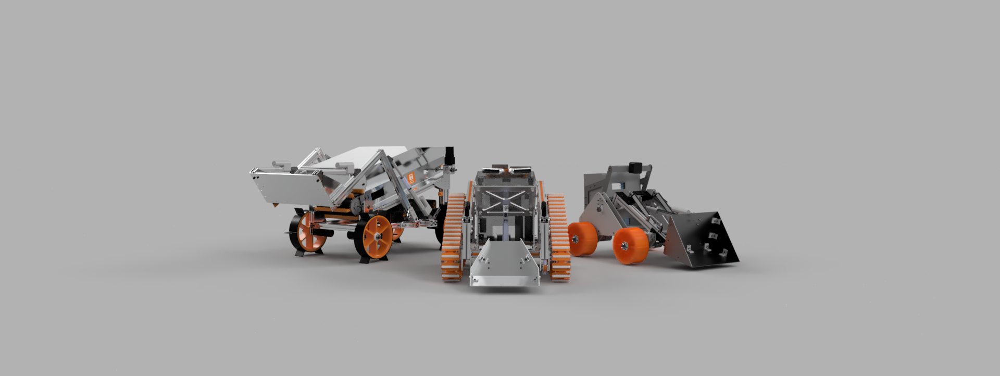
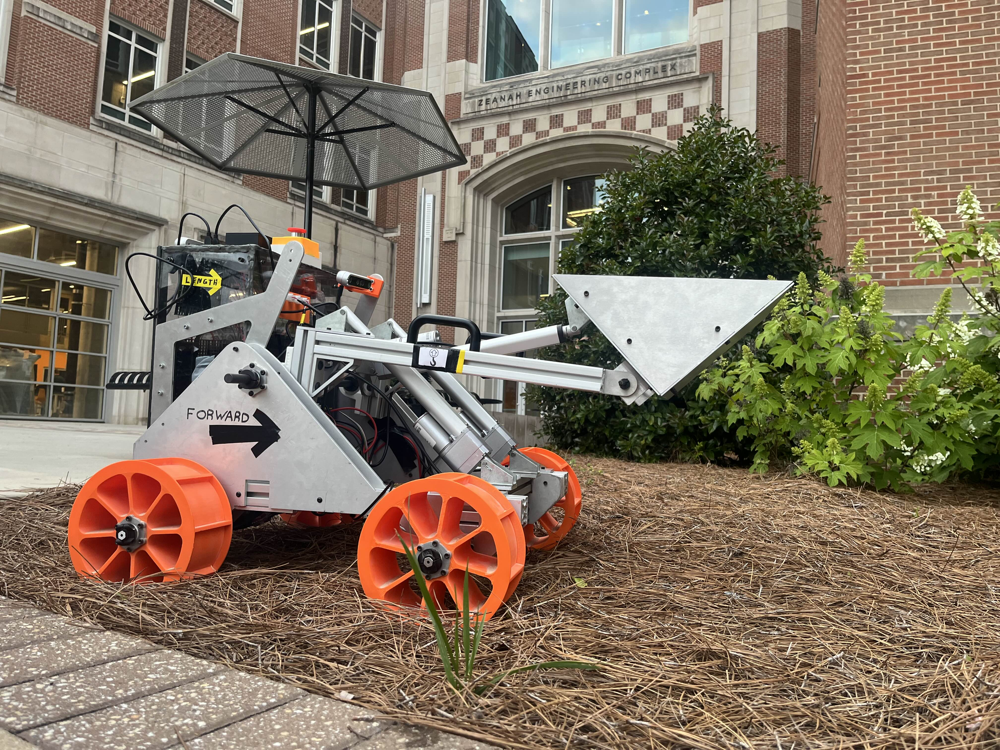

Overview
NASA Lunabotics is a robotics competition in which college teams design, program, and test a moon rover to futher moon habitation technology. The robot must be capable of navigation, excavation, and berm construction. The team represented the University of Tennessee in both the 2024 and 2025 NASA Lunabotics Competition, placing 15th of 35 teams in 2025. For the 2025-2026 school year, I served as the team's Mechanical Team Lead, involving leading the design process, prototyping, construction, and testing of the robot.
In past years, the robot has had dificulty navigating the lunar regolith medium. This year, we completely overhauled the drivetrain, implementing a fully custom track system, which has performed measureably better during the testing phase.
Details
- Timeline: Fall 2024 – present
- Tools & Software: Autodesk Fusion 360
- Skills: CAD, FEA, Systems Engineering